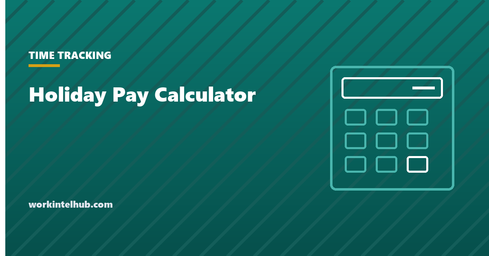

Holiday Pay Calculator

Holiday pay in the United States is almost entirely a matter of employer policy. Federal law requires no premium for working on a holiday and no pay for a holiday not worked; Rhode Island is the only state that mandates a premium, and it applies to a defined set of employers. What people are usually asking when they search for a holiday pay calculator is one of three things: what their employer's policy produces in dollars, how a paid holiday interacts with overtime that week, and whether the law gives them anything the policy does not.
The calculator answers the first two for the common policies. The rest of the page covers the legal position, the Rhode Island rule, the overtime interaction that most often goes wrong, the separate rule for salaried exempt employees, and what a typical policy looks like.
Holiday pay calculator
Holiday premium pay is a matter of employer policy or contract in every state except Rhode Island; there is no federal requirement. Overtime is still owed for hours over 40 actually worked in the workweek, and paid holiday hours not worked do not count toward the 40. Nothing typed here leaves your browser.
What the law requires
The Fair Labor Standards Act, as the Department of Labor states plainly, does not require payment for time not worked, including holidays, and does not require premium pay for work on holidays or weekends. Extra pay for holiday work is a matter of agreement between employer and employee, which in practice means the handbook, the offer letter or a union contract. Where a policy or contract promises holiday pay, most states will enforce the promise as earned wages, which is why the policy wording matters more than the statute.
The exception is Rhode Island. Under its Sunday and holiday premium law, the Rhode Island Department of Labor and Training requires most employers to pay non-exempt employees one and a half times the regular rate for work on Sundays and on legal holidays. Work on those days must be voluntary for retail and some other employees. Rhode Island's legal holidays include Victory Day in August, which no other state observes. Massachusetts had a similar retail premium that was phased out entirely on 1 January 2023, and it is still widely cited as current; it is not.
Federal contractors and federal employees are different. Executive Order 13706 and the Service Contract Act give holiday and leave entitlements on covered contracts, and federal employees receive holiday premium pay under Title 5. The federal holidays 2027 page lists the dates.
Holidays and overtime: the interaction that goes wrong
Overtime under the FLSA is owed for hours actually worked over 40 in a workweek. A paid holiday that was not worked is not hours worked, so it does not count toward the 40. An employee paid for Monday's holiday off who then works 8 hours on each of Tuesday to Friday has 32 hours worked and 8 hours of holiday pay; no overtime is due even though the paycheck shows 40 hours. Employers may count the holiday toward overtime by policy, and many union contracts do, but the default is that they need not.
The reverse case is where employers overpay or underpay by mistake. If the employee works the holiday at time and a half under policy and also exceeds 40 hours that week, the premium paid for the holiday hours may be credited against the overtime owed under 29 CFR 778.202. The credit applies only if the premium was at least 1.5 times the regular rate. The calculator applies that credit. What may not be done is to pay the holiday hours at straight time and then exclude them from the 40: hours worked on a holiday are hours worked. The overtime calculator and the time and a half calculator handle the general case.
Salaried exempt employees
An exempt employee's salary is for the week, not the hours, and 29 CFR 541.602 prohibits deductions for absences occasioned by the employer or by the operating requirements of the business. A company that closes for Thanksgiving must pay exempt staff their full salary for the week whether or not the handbook lists Thanksgiving as a paid holiday; docking the day risks the exemption for everyone in the same job classification. The employer may require exempt employees to use accrued leave for the closure, as long as the salary itself is paid, and may decline to pay an exempt employee who performs no work in an entire workweek.
For exempt employees who work the holiday, no premium is owed unless policy provides one. Some employers give a floating day in lieu; the salary versus hourly guide covers the trade-offs, and the exempt versus non-exempt entry the classification itself.
What a typical policy looks like
| Element | Common practice | Notes |
|---|---|---|
| Paid holidays | Six to eleven a year; the median private employer observes eight or nine | New Year's Day, Memorial Day, Independence Day, Labor Day, Thanksgiving and Christmas are near-universal; Juneteenth and the day after Thanksgiving are the fastest-growing additions |
| Eligibility | Full-time from day one or after 30 to 90 days; part-time pro rata or excluded | Eligibility rules must be applied consistently |
| Work on the holiday | Time and a half for hours worked, sometimes plus the holiday pay; double time in some union and healthcare settings | The premium may be credited against overtime |
| Holiday on a weekend | Observed on the nearest weekday, following the federal pattern | State the rule; it is the source of most disputes |
| Attendance rule | Must work the scheduled day before and after to receive holiday pay | Legal in most states if applied evenly; do not apply it to protected leave |
| Holiday during PTO | Holiday is paid as a holiday, not charged to PTO | Check the accrual and carry-over rules |
| Termination | Holiday pay for holidays after the last day is not owed | Some policies pay a holiday falling within the notice period |
Whatever the policy says, it becomes the obligation. The handbook guide covers where it sits, and the attendance policy the day-before-and-after rule.
Key takeaways
- Federal law requires no holiday premium and no pay for holidays not worked; the employer's policy or contract is the obligation.
- Rhode Island is the only state mandating a premium (1.5× on Sundays and legal holidays for covered employees); the Massachusetts retail premium ended in 2023.
- Paid holiday hours not worked do not count toward the 40-hour overtime threshold unless policy says so; hours worked on a holiday always do.
- A holiday premium of at least 1.5× may be credited against overtime owed the same week.
- Exempt employees must receive their full salary for a week in which the business closes for a holiday.
- Typical policies: eight or nine paid holidays, time and a half if worked, observed-weekday rule, and a day-before-and-after attendance condition.
Frequently asked questions
Is holiday pay required by law?
Not under federal law. The Fair Labor Standards Act requires neither pay for holidays not worked nor premium pay for holidays worked. Rhode Island is the only state that requires a premium, one and a half times the regular rate for Sunday and legal-holiday work by covered non-exempt employees. Everywhere else, the employer's policy or contract sets the terms, and once set it is enforceable.
How is holiday pay calculated?
Under the employer's policy: a paid holiday off is usually the normal daily hours at the regular rate; a holiday worked is the hours worked at the policy multiplier, commonly 1.5. If the employee also exceeds 40 hours actually worked that week, overtime is owed on the excess, and a holiday premium of at least 1.5 times may be credited against it. The calculator on this page applies those rules.
Does a paid holiday count toward overtime?
Not by default. Overtime is owed for hours actually worked over 40 in the workweek, and a paid holiday not worked is not hours worked. An employer may count it by policy, and many union contracts do. Hours worked on a holiday always count.
Do salaried employees get holiday pay?
Exempt salaried employees must be paid their full salary for any week in which the business closes for a holiday, because deductions for employer-caused absences are prohibited. They are not owed a premium for working a holiday unless policy provides one. Non-exempt salaried employees are treated like hourly employees for overtime purposes.
Can my employer require me to work the day before and after a holiday to get holiday pay?
In most states, yes, if the rule is written and applied consistently. It cannot be applied to absences protected by law, such as FMLA leave, jury service or a reasonable accommodation, and some states treat promised holiday pay as earned wages once the conditions are met.
What is time and a half on a holiday?
Pay at 1.5 times the regular rate for hours worked on the holiday, which is the most common premium in employer policies and the rate Rhode Island requires. At $22 an hour, 8 hours on a holiday at time and a half is $264 instead of $176.